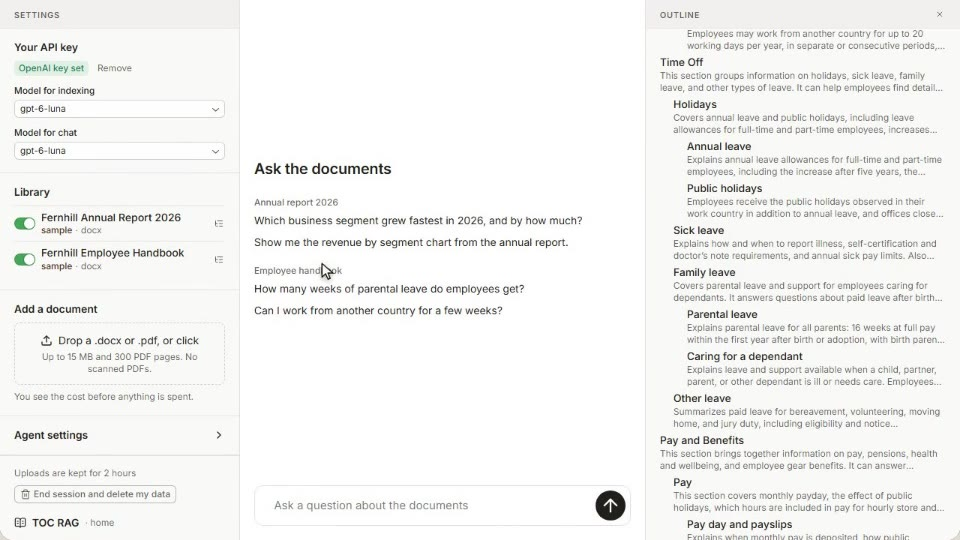
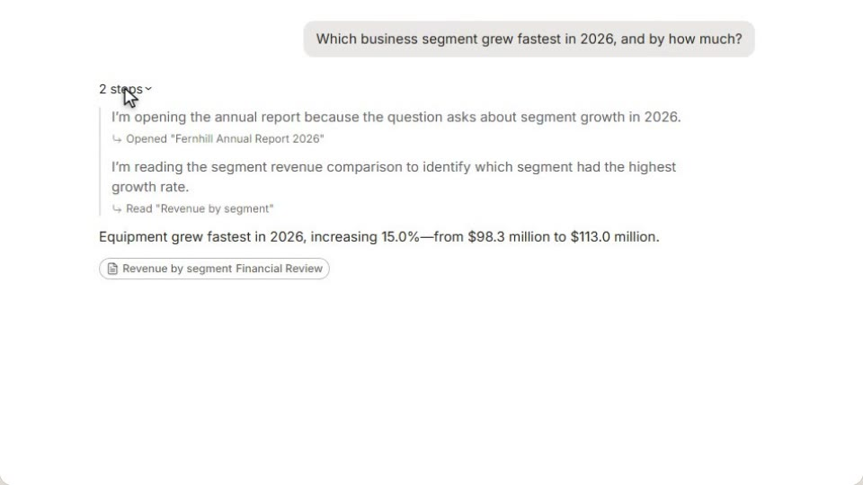
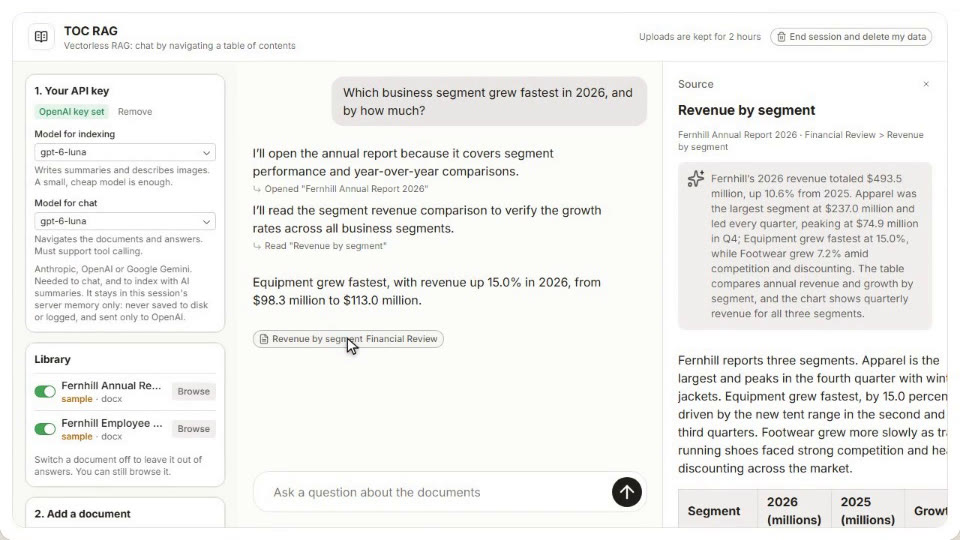
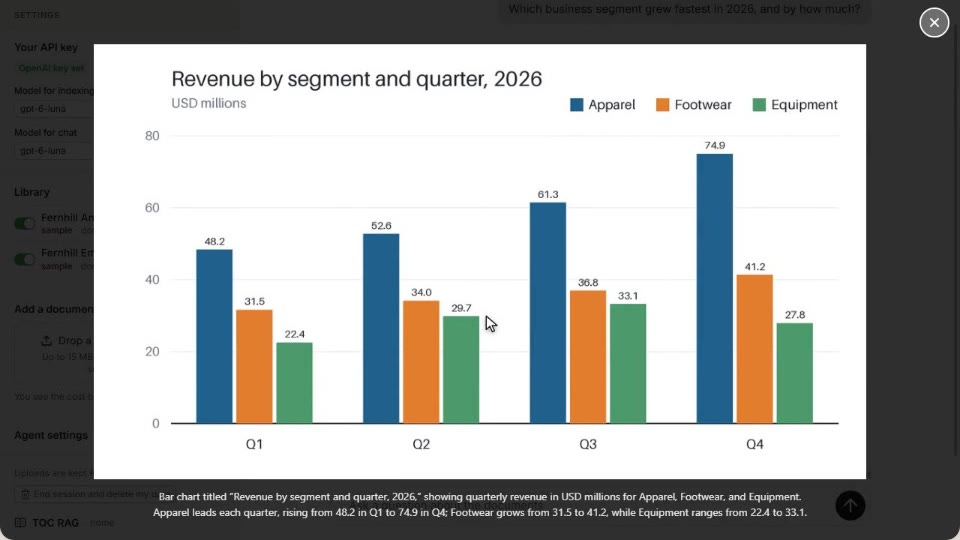
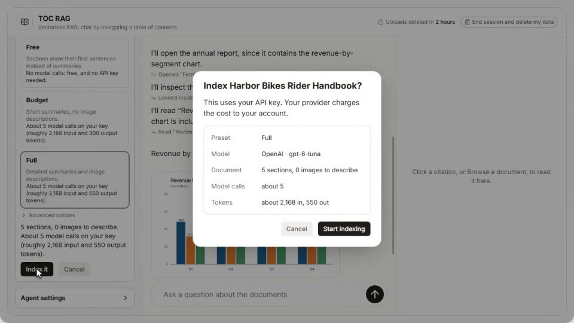

TOC-RAG
Retrieval without vectors. Instead of chunking and embedding, it reads a document the way a person would: through its table of contents.
- Builds a section tree from Word headings, PDF bookmarks or the printed contents page, then summarizes each section
- An agent opens, reads and backs out of sections, and each step it takes says why
- Section summaries also describe charts and images, so you can ask for a figure and get it back with the answer
- Python
- LangGraph
- Reflex
- Claude · GPT · Gemini